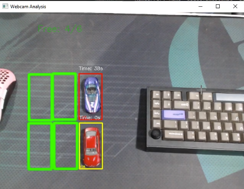

Projeto: Sistema de Identificação de Vagas de Estacionamento
Visão Geral
Este projeto consiste no desenvolvimento de um sistema de visão computacional para gerenciar vagas de estacionamento em tempo real. A solução de visa otimizar a gestão de estacionamentos em pequenos estabelecimentos, como restaurantes, lojas e consultórios, que frequentemente enfrentam desafios no monitoramento de vagas ocupadas e livres.

Problema Abordado
A dificuldade em saber quantas vagas estão ocupadas em estacionamentos limitados causa frustração a clientes e proprietários. A falta de um sistema eficaz leva a clientes estacionando em locais impróprios e a uma experiência insatisfatória.
Solução Proposta
Um sistema automatizado que utiliza visão computacional para:
- Contagem de carros em tempo real.
- Exibição do status das vagas (ocupadas e livres).
- Monitoramento do tempo de ocupação das vagas.
Durante a configuração o sistema permite que o usuário desenhe, redimensione e apague as áreas das vagas diretamente no vídeo com simples cliques do mouse, oferecendo uma configuração rápida e adaptável a qualquer layout de estacionamento.
Este vídeo mostra usuários testando o sistema:
A solução é implementada usando Python e a biblioteca OpenCV para processamento de imagens, calibração, segmentação e detecção de ocupação de vagas.
Veja o vídeo completo de demonstração:
Resultados e Aprendizados
O sistema se mostrou altamente eficaz na detecção, mesmo sob condições de iluminação variáveis, graças à implementação do threshold adaptativo. A prova de conceito, validada em ambiente de teste, confirmou a viabilidade e a flexibilidade da abordagem.
O maior aprendizado foi no balanceamento da sensibilidade da detecção: um limiar mal ajustado gerava falsos positivos com sombras ou pedestres. Este desafio aprofundou meu conhecimento prático sobre o ajuste fino de parâmetros em visão computacional e abriu portas para futuras melhorias, como a implementação de um classificador mais robusto (como SVM) para confirmar a presença de um veículo.
Recursos do Projeto
- Código Explicado: Code Explanation [PDF]
- Apresentação do Projeto: Presentation [PDF]
- Roteiro do Usuário: User Guide [PDF]